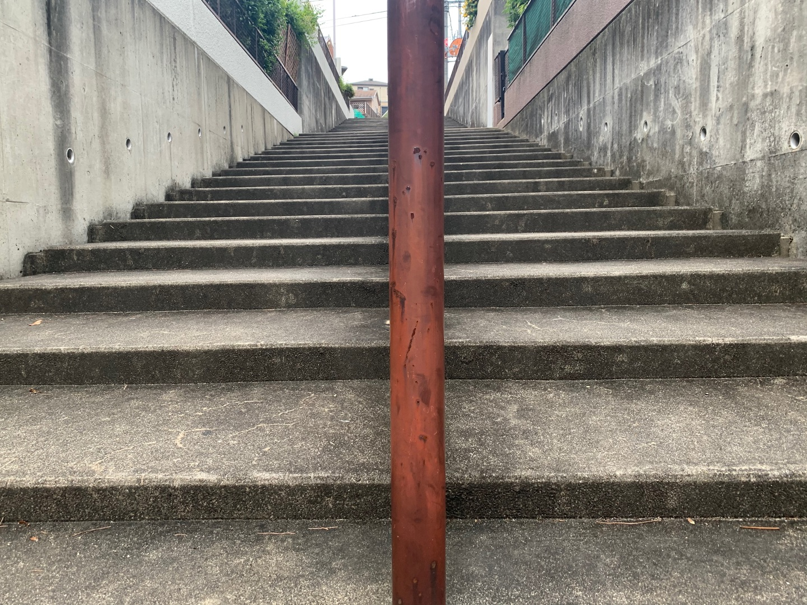
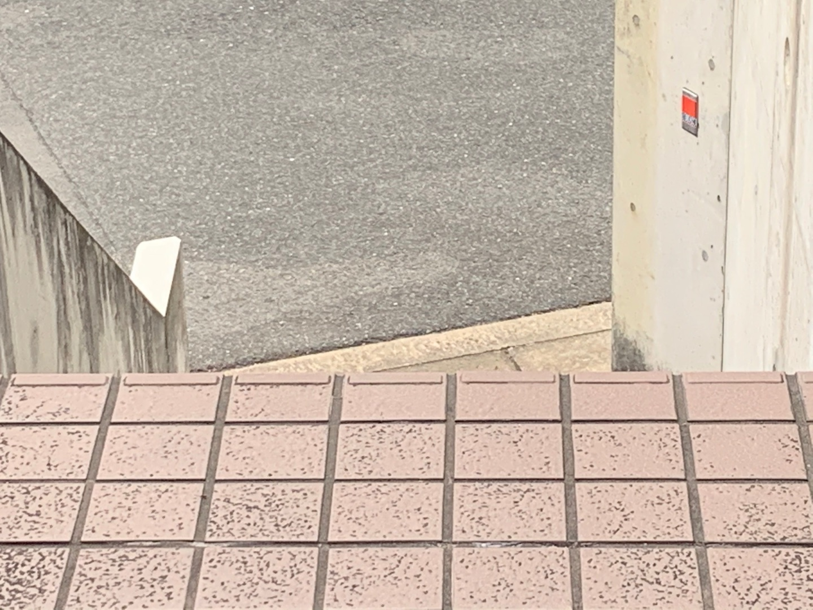
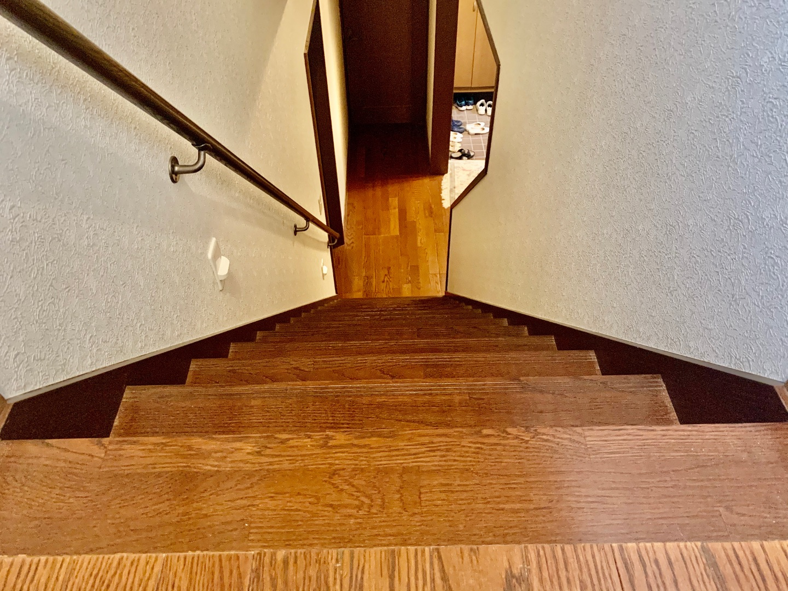
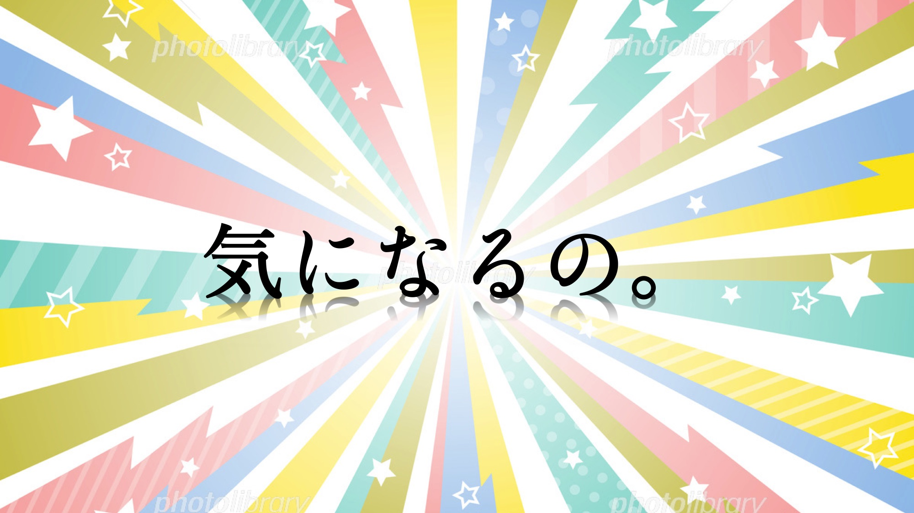
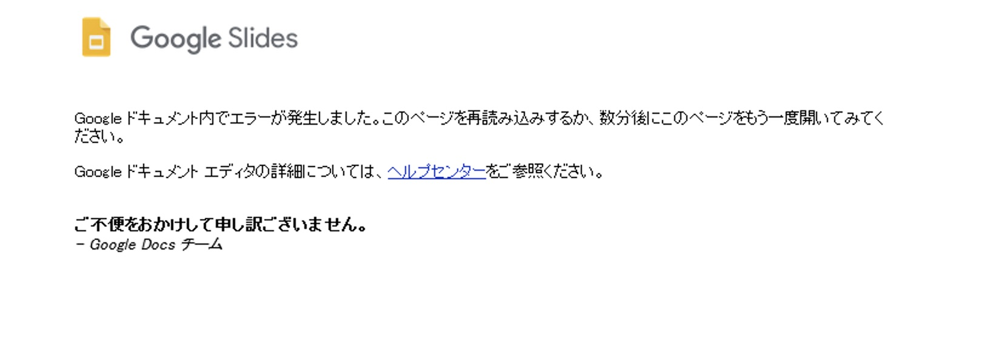

メディアリテラシー基礎
Session:1
課題：Photoshopでトップページ画像を作成する
ここにどのようにして，課題を作成したのか？を記述してください．
写真を入れたり，動画を埋め込んだりするととてもいい．
Session:2
WebPageの構造
HTMLを使ったWebPageの構造を、
- どのように作ったか？
- 自分なりのこだわりは？
Session:3
スタイルをあてる
スタイル（デザイン）を反映して、Pageを公開する
プランニング基礎
Session:1
Where is it ?

ここはどこでしょう？
そこはどこか？僕は今どこにいるのか？
それをたった数枚の写真のみで表現する。


とりあえず、ということで撮ったこれらの写真。
僕の居場所には上ったり下ったりしなければ辿り着くことはできない。
実はこれらの写真、全て居場所で待っている僕目線だったりもする。
Session:2
Everything I Have
リモート授業で実際には、ほとんど会えないクラスメイト。
彼らは一体どんな人なのか？
その中の二人について各々の分析を元に紹介プレゼンを作成した。

ヤバイ人の目線から見た二人の紹介プレゼンは今、振り返って見ても、良い出来だったと思う。
慢心は禁物。
Session:3
サプライズ
前期を締めくくる集大成ともなる課題。
ターゲットを選び、サプライズを仕掛ける。
ターゲットとサプライズのオチが瞬く間に決まったのに反して、
そこに至る過程は前日の夜、当日の昼、まで決まらなかった。
ちなみに僕たちのチームがターゲットに選んだのは
この課題を与えた張本人でもある「中山和也」先生。

様々なアクシデント()に見舞われながらも、無事、成功させることができた。
ただ、彼には、
リアクションの達人からリアクションについて学んで欲しい。
（あまり人のことは言えないけど。）